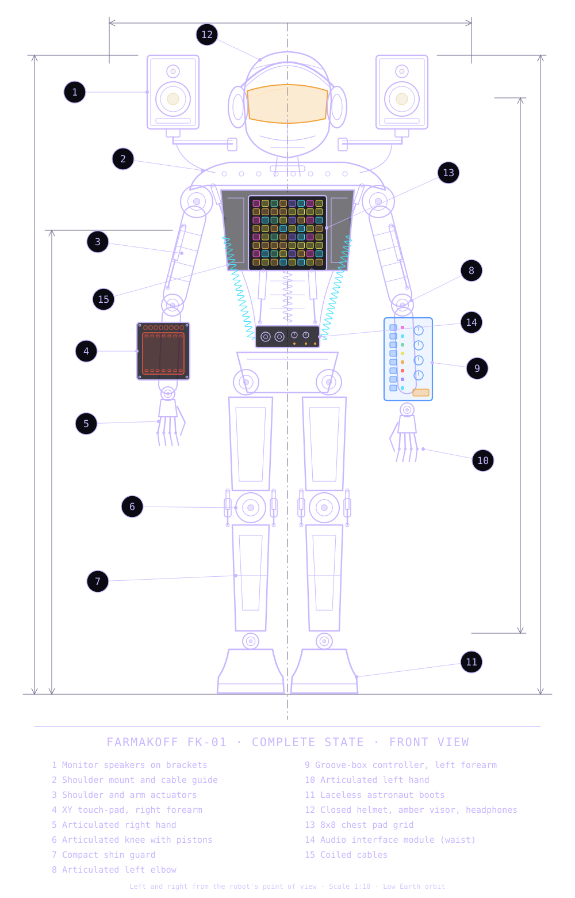
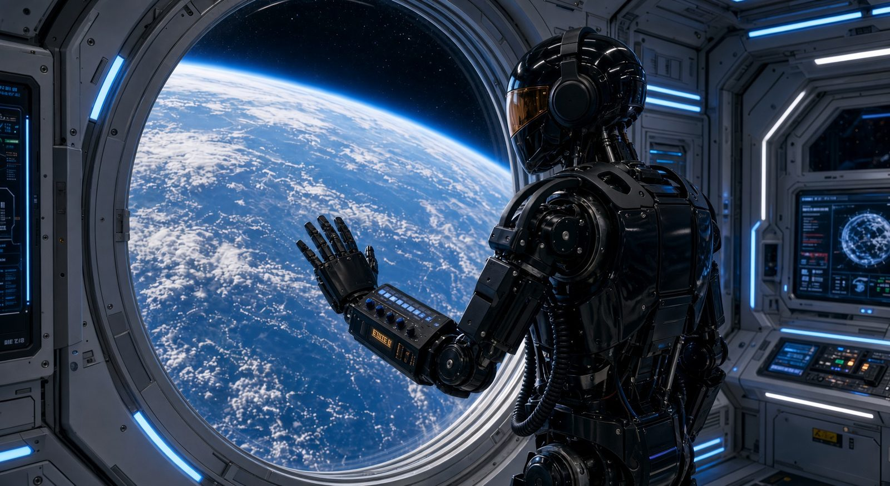

FARMAKOFF
La storia
Ultima trasmissione
Uscite
Registro di bordo
Live
Segnale
EN
Segnale in ricezione…
FARMAKOFF
Musica elettronica trasmessa da un robot in orbita bassa.
Ascolta l'ultima trasmissione

Chi trasmette
La storia
dal registro della stazione
Ultima trasmissione
la più recente in archivio
Uscite
Registro di bordo
messaggi dalla stazione
Live
prossimi appuntamenti